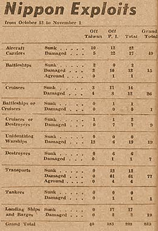

|
j
a v a s c r i p t |
November 3, 19443 — Meiji-Setsu Holiday

Box Score
The banks are closed and most people stayed home today. Tribune's extra large headline: "7 battleships, cruisers sunk or damaged in Leyte" — the new box score totals 223, including 49 carriers and 15 battleships sunk or damaged. It's become ludicrous. "Enemy pilot handed to garrison men" in Santa Rosa, Laguna, on October 31. The pilot requested the townspeople to take him to the guerrillas. Instead, Angel Viado, Guillermo Mendoza and five others turned him in to garrison authorities, says the article. What really happened was that he landed in the water, and two bancas from opposite sides went to fish him out — one with guerrillas and the other with PC men. Unfortunately, he landed nearer to the Santa Rosa side so the PC won the race. They wouldn't turn him over to the guerrillas because the Japanese were near, watching, and armed. The flyer gave his watch, goggles and candy to the men — a good thing too because the Japanese took his flight suit when he got ashore. With Carigara and Baybay gone, the Japanese are confined to the western part of Leyte, centered on Ormoc. Dispatches spoke of large aerial battles over Ormoc as the Japanese put up a fighter screen to cover movements of their merchantmen, destroyers and corvettes! The Americans launched every available fighter plane in Leyte. Despite numerical superiority over MacArthur's land-based planes, 27 Japanese planes were shot down. Mac said that the Leyte-Samar campaign is nearing its end. Several big ships are in Manila Bay, protected by patrolling Japanese fighters overhead. A large oil fire began this morning in the direction of the North Harbor, possibly a tanker. It was still burning at noon. A report says that the Japanese recently stormed Cupang, firing at any male that looked like a possible guerilla. They were hunting for "Terry." At Marilao, the guerrillas had the advantage and stormed the Japanese garrison at 0100. For two hours, everything from bullets to bolos whizzed by the stunned residents. |
|
|
|
|